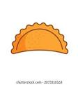

otras opciones
restaurant san cayetano
le damos la bienvenida a nuestro restaurant donde esperamos que su experiencia sea lo mas agradable posible
acceda a nuestro menus a traves de la barra

Entradas

- Empanadas
- croquetas de jamón
- Ensalada de la casa
Platos Principales
- Asado de tira
- Pizza de pepperoni
- Pechuga de pollo a la plancha
Postres
- Tiramisú
- Flan
- Helado de vainilla
bebidas
Restaurante delicioso - Todos los derechos reservados